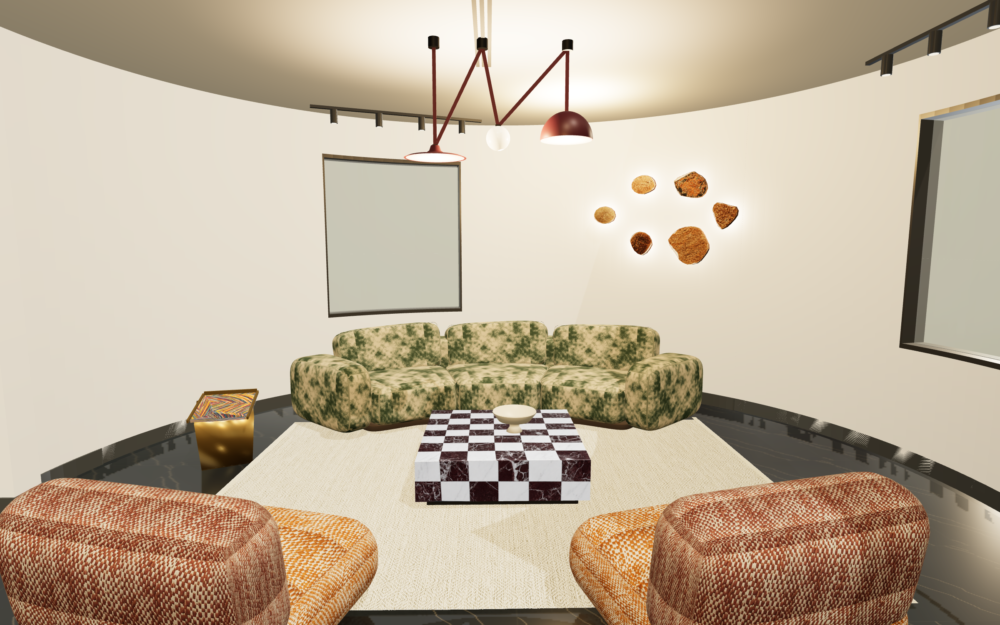
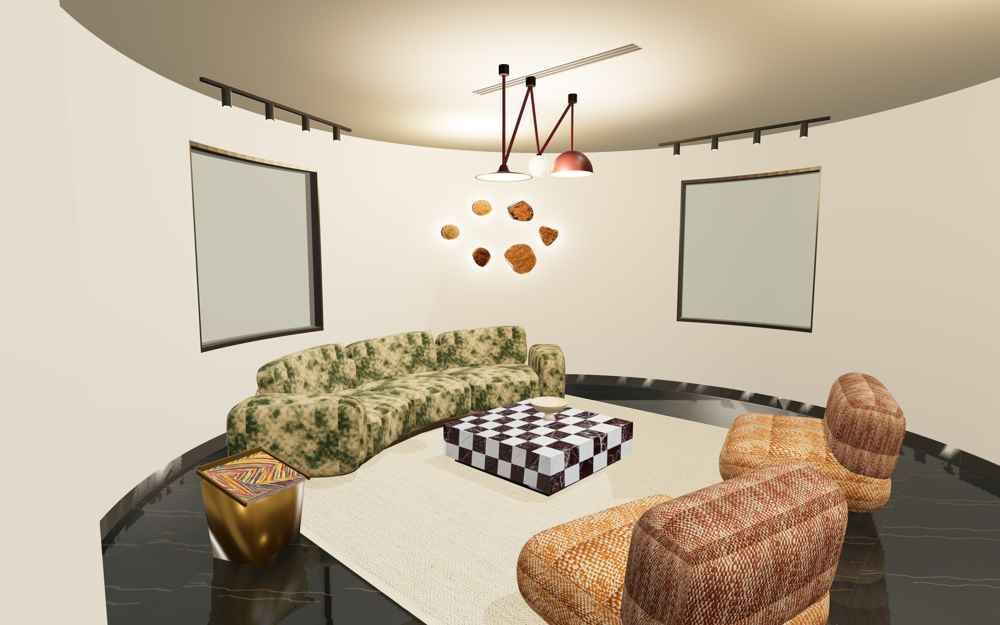
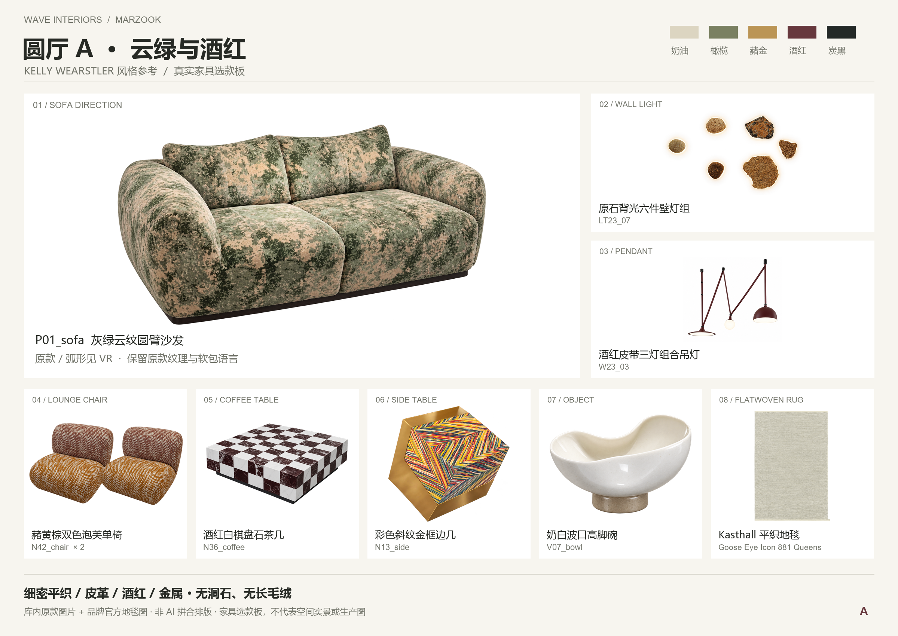
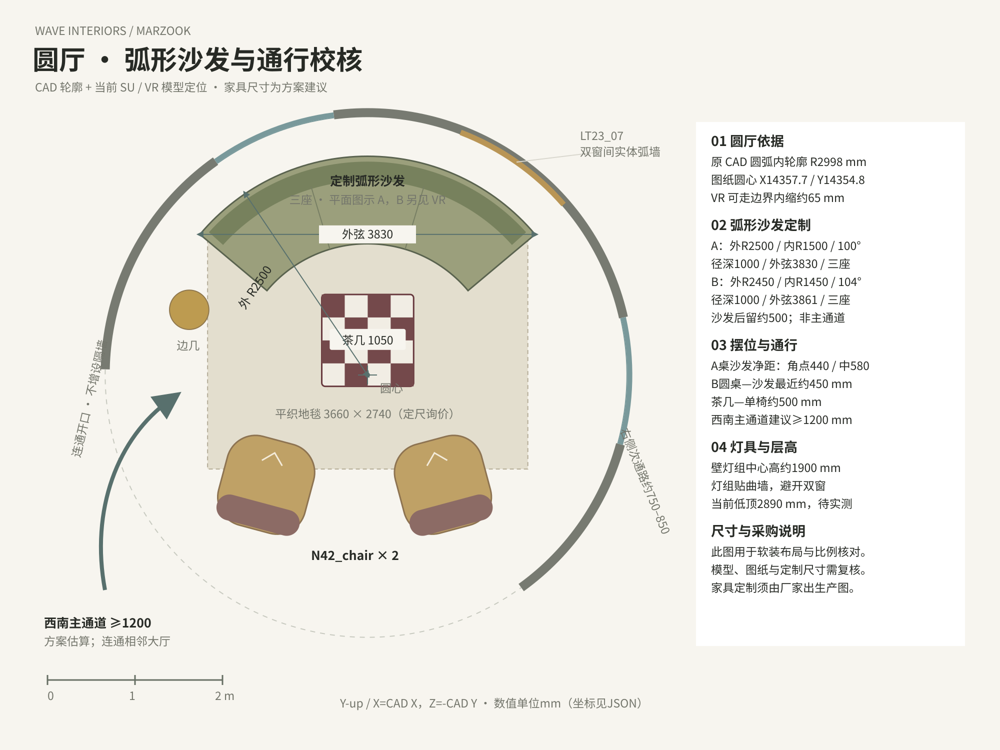

Kasthall / Goose Eye Icon
881 Queens · 5 mm 平织羊毛与亚麻。拟定 3,660 × 2,740 mm，定尺及供应需向厂家确认。
品牌产品页 ↗SOFT FURNISHING STUDIES / 24 OCT 2026
以弧线组织交谈，让云绿、酒红和烟金，接续相邻客餐厅的色彩。
Kelly Wearstler 构成参考 · 家具库优先 · 真实产品图 · 无洞石 / 无羊羔绒 / 无长毛绒
A / MOSS & OXBLOOD


THE CONVERSATION
以上为设计试摆值。窗、局部顶高及家具实物尺寸须现场复核；弧形沙发为基于原款的定制设计，需厂家深化分段、结构和面料。
SELECTED FROM YOUR COLLECTION
使用家具库的现有白底素材。沙发原款与弧形定制效果分开呈现，便于核对。

DRAWINGS BEFORE DECORATION
沿客户图纸的圆心与圆弧布置。岩石壁灯逐颗贴合双窗之间的实体弧墙，吊灯按当前约 2.89 m 顶高控制下垂。
双色单椅采用细密平织外观；地毯为 Kasthall Goose Eye Icon 881 Queens 平织羊毛 / 亚麻，官方总厚约 5 mm。石材采用清晰纹理与平滑表面，排除洞石。
金框彩纹边几仅放一件。N18 高柜与 N16 条纹壁柜保留作相邻直墙区备选，圆厅以弧墙、双窗和壁灯为主。
查看尺寸平面 ↗
PRODUCTS & PROVENANCE
881 Queens · 5 mm 平织羊毛与亚麻。拟定 3,660 × 2,740 mm，定尺及供应需向厂家确认。
品牌产品页 ↗库内编号链接到白底原图及客户来源。灯具和部分款式未确认品牌，保留原编号，不以相似品牌替代。P01 / P08 的弧形为本次定制设计。
完整选款与来源清单 ↗建筑沿用客户现有连续空间；家具采用原款模型或按白底图取纹的手工试摆几何。白底图库部分素材含此前整理或补全，本次未新增 AI 图片。效果用于搭配和尺度讨论。
客户现状平面 ↗